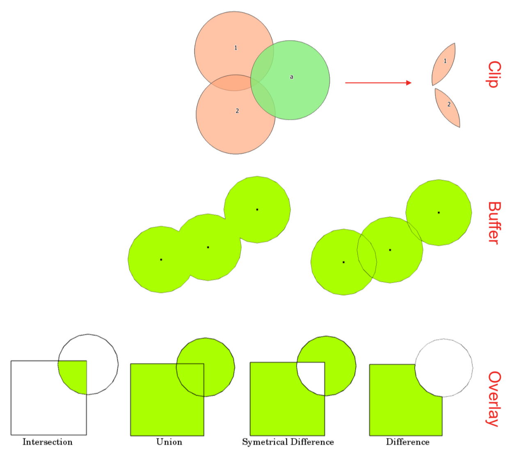
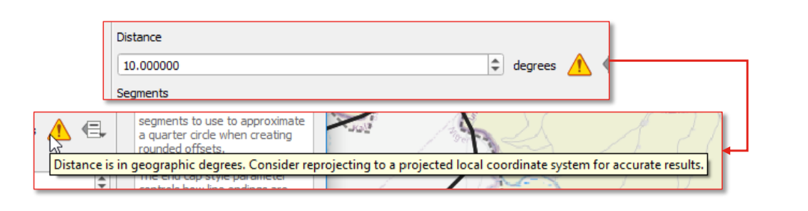

5.2. Overlay Operations (Clip, Dissolve, Buffer)#
Overlay operations allow us to combine the geometries of two layers in different ways (see Fig. 5.10).
The difference to spatial joins is that the geometries are transformed in the process, and not primarily the attributes.
{kind=link}

Fig. 5.10 Visual representation of different overlay operations.#
Overlay operations include Clipping, Buffering, and Dissolving. In the next subchapters, we will take a look at each of these overlay operations in turn and provide some examples for humanitarian work.
5.2.1. Clip#
The

Cliptool is used to cut a vector layer using the boundaries of another polygon layer. In other words, it extracts a portion of a dataset based on the boundaries of another.It keeps only the parts of the features in the input layer that are inside the polygons of the overlay layer, producing a refined dataset.
While the core attributes of the features remain the same, some properties, like area or length, may change after the clipping operation. If you’ve stored these properties as attributes, you might need to update them manually.
Humanitarian Example:
Flood extent data for Pakistan is available, but the focus is on mapping flood damage in a specific administrative region. In this case, the flood layer can be clipped to the administrative boundaries of the area of interest.
The tool has two different input options:
Input layer: Layer from which the selection is clipped
Overlay layer: Area of interest to which the input layer will be clipped

Fig. 5.11 Screenshot of the Clip tool with the input data.#
5.2.2. Exercise: Clipping a roads layer to administrative boundaries#
Information on road infrastructure for humanitarian aid operations is of great importance and can be easily retrieved from open-source data sources like OpenStreetMap. However, this information is often included in extensive datasets that contain a significant amount of irrelevant details for specific operations or it covers a lot more area than is necessary for the operation. To make working with this data more efficient, it is common practice to clip the data to the area of interest. In addition to clipping, data can often be filtered, in order to remove data we are not interested in.
Load the OSM roads data from the HOT Export tool (part of the Humanitarian OpenStreetMap Team) here as a new layer: Road_infrastructure_Sudan.geojson.
Filter the layer by using the query builder to only show primary and residential roads (“highway” = ‘primary’ OR “highway” = ‘residential’)
Load the admin1 layer for Sudan which contains the district White Nile, ne_10m_admin_1_Sudan_White_Nile.geojson. They are downloaded from Natural Earth Data.
Select the roads layer and open the Clip dialogue from
Vector>Geoprocessing ToolsSet roads as the input layer and the district boundaries of White Nile as the overlay layer
Click Run to generate a temporary layer called Clipped
You now have a tidy roads layer which contains the necessary information
Solution: Clipping a roads layer to administrative boundaries
5.2.3. Dissolve#
The 
Dissolve-tool creates a new layer and merges overlapping features from
one or two vector layers. You can pick one or more attributes to group together features that share the same
value for those attributes. Alternatively, you can combine all features into one. If you’re working with polygons,
it will remove shared boundaries between them.
If you turn on the “Keep disjoint features separate” option when running the tool, it’ll make sure that features or parts that don’t overlap or touch each other are saved as separate features instead of being part of one big feature. This allows you to create several vector layers.
Humanitarian Example:
Two datasets show the flood extent of two different flood events in the past year. Both layers overlap but show differences. Dissolve can create polygons that show the flooded area in the past year.

Fig. 5.12 Buffer zones with dissolved (left) and with intact boundaries (right) showing overlapping areas
(Source: QGIS Documentation, Version 3.28)#
In the next section on buffers we will be using the dissolve-tool.
5.2.4. Buffer#
Buffering creates zones of predetermined distances around geometric features as a new polygon layer. These buffers surround the input vector features. This buffer zone is typically uniform and extends outward from the original input features, making it useful for various spatial analyses and mapping applications. Buffers can be created around points, lines, and polygons as shown in Fig. 5.13.
Examples for analyses using buffers could be:
Creating of buffer zones to protect the environment
Analysing greenbelts around residential area
Creating risk areas for natural disasters.
Humanitarian Example:
To analyze access to clean water sources, a scenario considers how far the population can walk to reach them. A 2 km buffer is created around a dataset of wells to visualize which areas fall within this distance. This method helps assess coverage and identify gaps in access to clean water.

Fig. 5.13 Different kinds of buffer zones
(Adapted after QGIS Documentation, Version 3.28)#
There are several variations in buffering. The buffer distance or buffer size can vary according to the numerical values provided. The numerical values have to be defined in map units according to the Coordinate Reference System (CRS) used with the data.
Attention
{kind=link}

Fig. 5.14 The error message QGIS displays when performing distance based calculations in a geographic coordinate system#
If…
You get a projection warning message
Your layer(s) don’t show up
Layers look odd ‒ e.g. squashed
Error message “using degrees” when using distances (as shown in Fig. 5.14) … it might be a projection issue.
To solve it, try…
Changing the CRS for the layer
Reprojecting the layer
For example, if you are trying to make a buffer on a layer with a Geographical Coordinate System, QGIS will warn you and suggest to reproject the layer to a metric Coordinate System. This is because when you are using a metric coordinate system, the algorithm will use degrees to calculate the distance of the buffer size. However, the distance between degrees are not uniform and depend on the latitude (see Fig. 5.15)

Fig. 5.15 This image illustrates this – 10 degrees of longitude at the equator is 1,113km, but 10 degrees of longitude at 70 degrees latitude is only 381km. (Source: Ricky Angueria).#
This is why you’ll need to convert to a local/projected coordinate system to be able to specify distances in km/miles (e.g. when using the buffer tool).
5.2.5. Exercise: Create 10km buffer around health centres#
Another example relevant for humanitarian action can be the creation of a map which provides information about the coverage of health sites in the distance of 10 km. To achieve this, a buffer of 10 km is created around points representing healthsites. In some cases, this will create buffer zones which overlap. In order to create a homogenous area, we can dissolve overlapping buffer zones.
Download the Sudan health sites data from HDX as a shapefile
Load your new data into QGIS. Also add the district boundaries of Khartoum, ne_10m_admin_1_Sudan_Khartoum.geojson. They are also downloaded and adapted from Natural Earth Data.
Clip your health sites to the boundaries of Karthoum district
Reproject the health sites layer to a local coordinate system to enable setting distances in km
Vector menu > Data Management Tools > Reproject Layer
Select the health sites layer as the input layer
Set the target CRS to WGS 84 / UTM zone 36N (click the projections icon to search the full list of options)
Click
Runto reproject
Open the Buffer tool by accessing
Vector>Geoprocessing Tools>BufferSelect the reprojected layer as the input layer
Set the distance to 10km
Check the option to dissolve result
Leave the other options as defaults and click
Run
Now you have a rough overview over the coverage with health sites for the district of Khartoum
Solution: Create 10km buffer around health centres
5.2.6. More advanced clipping operations#
In addition to the standard QGIS operation Clip, there are two other more advanced tools for performing clipping processes. These tools are GDAL operations, which enable the definition of the clipping extent. This extent can be either a specific area or a mask layer. The second option is quite similar to the standard clipping process provided by QGIS.

Fig. 5.16 The GDAL tools Clip vector by extent and Clip vector by mask layer#
This operation clips any vector file to a given extent. This clip extent will be defined by a bounding box that should be used for the vector output file. It also has to be defined in the target CRS coordinates. There are different methods to define the bounding box, which are the great difference between this tool and the standard clipping process:
Calculate from a layer: this uses the extent of a layer loaded into the current project
Calculate from layout map: uses the extent of a layout map item in the active project
Calculate from bookmark: uses the extent of a saved bookmark
Use map canvas extent
Draw on canvas: click and drag a rectangle delimiting the area to take into account
Enter the coordinates as xmin, xmax, ymin, ymax

Fig. 5.17 Screenshot of the tool Clip vector by extent#
This operation uses a mask polygon layer to clip any vector layer. This operation only takes two input:
The input layer
The mask layer which is used as the clipping extent for the input vector layer

Fig. 5.18 Screenshot of the tool Clip vector by mask layer#